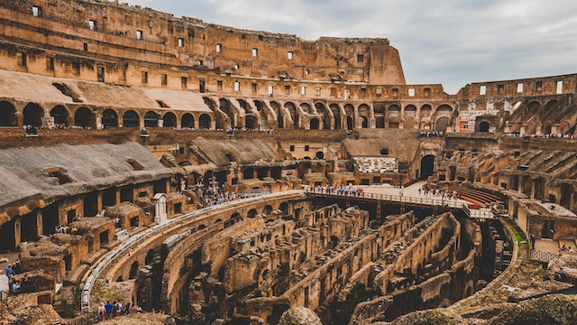
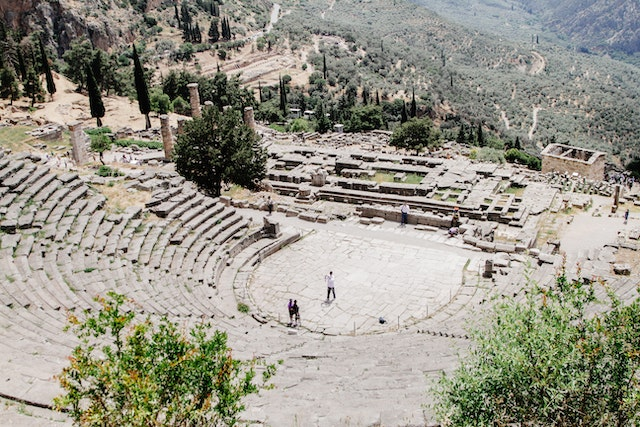
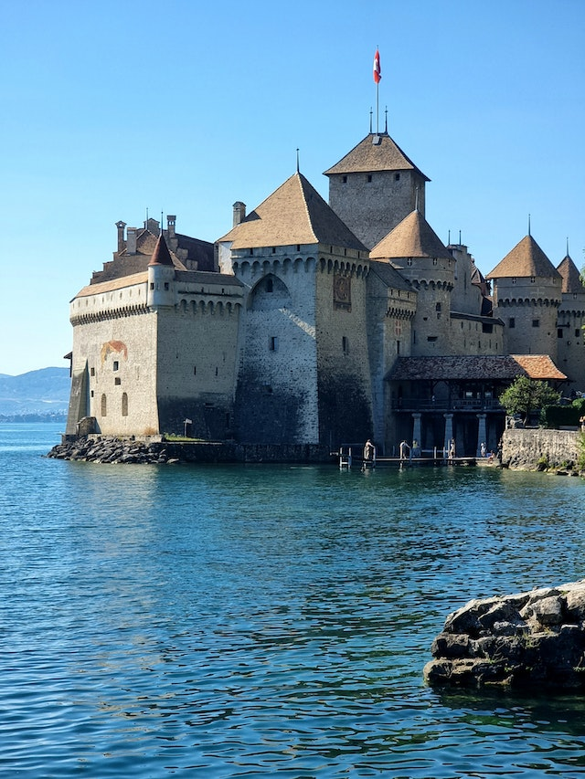

Coliseu de Roma, Itália
O Coliseu de Roma é um dos principais pontos turísticos da Itália e do mundo. Ele recebe nada mais nada menos do que 4 milhões de turistas todos os anos, que visitam às suas bem preservadas ruínas. Sua construção deu-se início no ano de 72 d.C. e, durante décadas, serviu de palco para gladiadores que lutavam entre si ou com animais para um público de mais de 70 mil romanos.
O Coliseu era o anfiteatro romano da época e seguiu como símbolo de entretenimento durante mais de 400 anos. Atualmente, o atrativo abriu inúmeras zonas do anfiteatro que até alguns anos tinham acesso proibido aos turistas, bem como as masmorras dos gladiadores e os corredores subterrâneos.
Delfos, Grécia
Delfos é uma moderna cidade grega muito conhecida por seu sítio arqueológico, que foi declarado Patrimônio Mundial pela UNESCO. Em épocas antigas, era o local dos Jogos Píticos e de um famoso oráculo (o oráculo de Delfos), que ficava dentro de um templo dedicado ao deus Apolo, elaborado por Trofônio e Agamedes. Delfos era reverenciado por todo o mundo grego como o omphalos, o centro do universo.
O sítio arqueológico de Delfos é dividido em dois santuários, o de Apolo e o de Atenas. Além das ruínas e da importância histórica, o local também possui uma natureza exuberante, com o Monte Parnasso ao fundo. Dentre as atrações estão o Templo de Apolo (lugar que aconteciam as previsões do oráculo) e o anfiteatro, de 400 a.C e ainda muito bem conservado, que abrigava cerca de cinco mil pessoas para os espetáculos e também era utilizado durante os jogos píticos, que aconteciam de quatro em quatro anos..
Castelo de Chillon, Suíça
O castelo de Chillon, localizado sobre uma rocha na margem do Lago Genebra, é o edifício histórico mais visitado da Suíça. Durante quase quatro séculos, Chillon foi residência e rentável estação aduaneira dos Condes de Saboia.
Mais de 400.000 visitantes por ano visitam Chillon, com os murais do século XIV, os cofres subterrâneos, os salões de desfile e o quarto original preservado da época dos reis de Berna. As instalações são compostas por 25 edifícios e três fazendas que estão protegidos por duas fortificações.